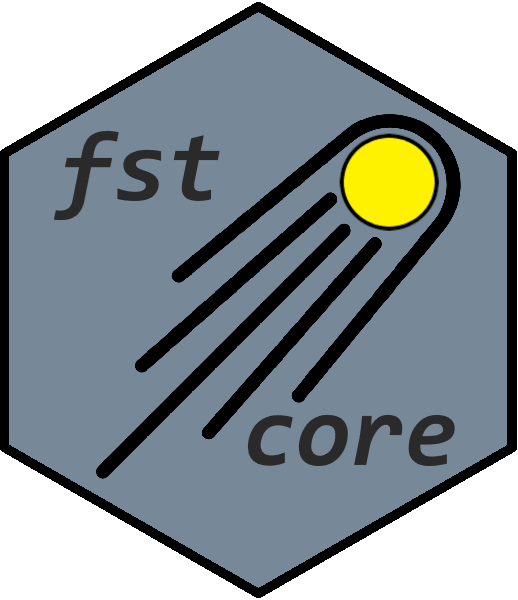

Overview
R package fstcore contains R bindings to the C++ fstlib library which allows interfacing with fst files. It also contains the LZ4 and ZSTD sources used for compression. fstcore exists as a package separate from the fst package to facilitate independent updates to the fstlib, LZ4 and ZSTD libraries and is used as a backend to fst.
Installation
Package fstcore is automatically installed as a dependency when you install the fst package from CRAN. If you need to install it directly, you can use:
install.packages("fstcore")You can also use the development version from GitHub:
# install.packages("devtools")
devtools::install_github("fstpackage/fstcore", ref = "develop")Basic usage
Please refer to https://www.fstpackage.org/fst to get an introduction to using the fst package.
Contact
Questions, ideas and issues can be reported in the fst package repository.